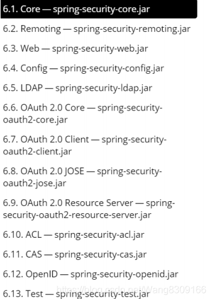

# SpringSecurity 草稿
# SpringSecurity 简单介绍
Spring Security 正是 Spring 家族中的 成员。Spring Security 基于 Spring 框架，提供了一套 Web 应用安全性的完整解决方案。
主要区域是 “认证” 和 “授权”（或者访问控 制），一般来说，Web 应用的安全性包括 ** 用户认证（Authentication）和用户授权 （Authorization）** 两个部分，这两点也是 Spring Security 重要核心功能。
- 用户认证指的是：验证某个用户是否为系统中的合法主体，也就是说用户能否访问 该系统。用户认证一般要求用户提供用户名和密码。系统通过校验用户名和密码来完成认 证过程。通俗点说就是系统认为用户是否能登录
- 用户授权指的是验证某个用户是否有权限执行某个操作。在一个系统中，不同用户 所具有的权限是不同的。比如对一个文件来说，有的用户只能进行读取，而有的用户可以 进行修改。一般来说，系统会为不同的用户分配不同的角色，而每个角色则对应一系列的 权限。通俗点讲就是系统判断用户是否有权限去做某些事情。
模块划分

# 入门案例
创建 springboot 工程，引入 springsecurity 坐标，随便写一个接口，就会跳转到 springsecurity 自带的登录页面，因为 springboot 已经自动配置整合了 springsecurity
<!-- spring security--> | |
<dependency> | |
<groupId>org.springframework.boot</groupId> | |
<artifactId>spring-boot-starter-security</artifactId> | |
</dependency> |
创建 controller
@GetMapping(value = "/hello") | |
public String hello() { | |
return "hello security"; | |
} |
访问 /hello 请求将自动跳转到 login 页面，（默认账号 user，密码将在控制台输入随机密码）
User
UserDetails
UserDetailsService
WebSecurityConfigurerAdapter
springsecurity 配置用户名密码的三种方式
配置文件设置用户名密码
spring:
security:
user:
name: user
password: pwd
配置类设置用户名密码
@Configurationpublic class SecurityConfig extends WebSecurityConfigurerAdapter {
@Overrideprotected void configure(AuthenticationManagerBuilder auth) throws Exception {
auth.inMemoryAuthentication()
.withUser("username")
.password("password")
.roles("roles");
}}实现接口完成数据库查询获取用户名密码方式（此方式是开发中常用方式。）
// 去实现 UserDetailsService 接口@Component@Slf4jpublic class SecurityUserDetailService implements UserDetailsService {
// 使用 BCrypt 进行加密，需要将该类填进到 spring 容器中@Autowiredprivate PasswordEncoder passwordEncoder;
@Overridepublic UserDetails loadUserByUsername(String accountName) throws UsernameNotFoundException {
// 角色必填不能为 nullreturn new User('username', passwordEncoder.encode('password'), AuthorityUtils.commaSeparatedStringToAuthorityList(role2 + ",ROLE_admin");
}}@Autowiredprivate UserDetailsService userDetailsService;
@Autowiredprivate PasswordEncoder passwordEncoder;
// 在 SecurityConfig 配置类中注入加密密码的 PasswordEncoder，// 和实现的校验用户名密码的 UserDetailsService@Overrideprotected void configure(AuthenticationManagerBuilder auth) throws Exception {
super.configure(auth);
auth
// 设置 UserDetailsService.userDetailsService(userDetailsService)
// 使用 BCrypt 进行加密.passwordEncoder(passwordEncoder);
}
# WebSecurityConfigurerAdapter
// 重写此方法可以自定义添加登录用户名密码来交给 springsecurity 进行身份验证 | |
// 和设置密码加密方式 | |
@Override | |
protected void configure(AuthenticationManagerBuilder auth) throws Exception { | |
super.configure(auth); | |
auth | |
// 设置 UserDetailsService | |
.userDetailsService(userDetailsService) | |
// 使用 BCrypt 进行加密 | |
.passwordEncoder(passwordEncoder); | |
} |
// 重写此方法用来配置请求过程中的一些配置 | |
// 权限信息来自登录经过 loadUserByUsername 方法返回 User 中的权限 | |
@Override | |
protected void configure(HttpSecurity httpSecurity) throws Exception { | |
httpSecurity.formLogin() | |
// 前后端不分离使用 | |
.loginPage("指定登录的html页") | |
.loginProcessingUrl("指定登录url访问地址") | |
.successForwardUrl("指定登录成功跳转地址") | |
.and().authorizeRequests() | |
.antMatchers("接口地址url").permitAll() // 表示那些路径地址放行，不需要认证 | |
.antMatchers("接口地址url").hasAuthority("权限") // 当前登录用户只有拥有了 hasAuthority () 方法中的权限才能进行访问 | |
.antMatchers("接口地址url").hasAnyAuthority("[权限1，权限2]") // 当前登录用户只有拥有了 hasAnyAuthority () 方法中的任意一权限就可以访问 | |
.antMatchers("接口地址url").hasRole("角色") // 当前登录用户只有拥有了 hasRole () 方法中的角色即可访问 | |
.antMatchers("接口地址url").hasAnyRole("[角色1,角色2]") // 当前登录用户只有拥有了 hasAnyRole () 方法中的任意角色即可访问 | |
.anyRequest().authenticated(); // 剩下的所有 url 都需要认证授权 | |
httpSecurity.exceptionHandling().accessDeniedPage("403没有权限访问页面路径url"); // 前后端不分离使用 | |
httpSecurity.exceptionHandling().accessDeniedHandler(securityAccessDeniedHandler); // 适用于前后端分离开发使用，但是需要实现对应的 handler 接口然后注入到配置类中使用。 | |
ExpressionUrlAuthorizationConfigurer<HttpSecurity>.ExpressionInterceptUrlRegistry config = httpSecurity | |
// 禁用 CSRF | |
.csrf().disable() | |
.exceptionHandling() | |
// 认证失败处理 | |
.authenticationEntryPoint(securityAuthenticationEntryPoint) | |
// 无权限处理 | |
.accessDeniedHandler(securityAccessDeniedHandler) | |
// 不创建 session 使用 token 不需要 session | |
.and() | |
.sessionManagement() | |
.sessionCreationPolicy(SessionCreationPolicy.STATELESS) | |
.and() | |
.authorizeRequests() | |
// 登录 url 不验证 | |
.antMatchers("/sys/login").permitAll() | |
.antMatchers("/swagger-ui/**").permitAll() | |
.antMatchers("/swagger-resources/**").permitAll() | |
.antMatchers("/v3/**").permitAll() | |
// OPTIONS 请求不验证 | |
.antMatchers(HttpMethod.OPTIONS, "/**").permitAll(); | |
// 剩下所有请求都需要认证 | |
config.anyRequest().authenticated(); | |
// 禁用缓存 | |
httpSecurity.headers().cacheControl(); | |
// 添加 JWT filter | |
httpSecurity | |
.addFilterBefore(securityAuthenticationTokenFilter, UsernamePasswordAuthenticationFilter.class); | |
} |
权限角色底层源代码
private static String hasAuthority(String authority) { | |
return "hasAuthority('" + authority + "')"; | |
} | |
private static String hasAnyAuthority(String... authorities) { | |
String anyAuthorities = StringUtils.arrayToDelimitedString(authorities, "','"); | |
return "hasAnyAuthority('" + anyAuthorities + "')"; | |
} | |
private static String hasRole(String role) { | |
Assert.notNull(role, "role cannot be null"); | |
Assert.isTrue(!role.startsWith("ROLE_"), | |
() -> "role should not start with 'ROLE_' since it is automatically inserted. Got '" + role + "'"); | |
return "hasRole('ROLE_" + role + "')"; | |
} | |
// 角色与权限不同的是他会在角色前面加上 ROLE_前缀，所以在我们赋予登录角色的时候也应该添加上 ROLE_前缀。 | |
private static String hasAnyRole(String... authorities) { | |
String anyAuthorities = StringUtils.arrayToDelimitedString(authorities, "','ROLE_"); | |
return "hasAnyRole('ROLE_" + anyAuthorities + "')"; | |
} |
# UserDetailsService
# UserDetails
# User
# SpringSecurity 注解
// 开启 SpringSecurity 注解配置的注解，放在启动类或者配置类上都可以 | |
// 参数 prePostEnabled 开启 @PostAuthorize 注解使用，参数 securedEnabled 开启 @Secured 注解使用 | |
@EnableGlobalMethodSecurity(prePostEnabled = true, securedEnabled = true) | |
// @Secured 注解使用 | |
@Secured({"ROLE_admin","ROLE_user"}) | |
public String hello1() { | |
return "hello word!"; | |
} | |
// @PreAuthorize 注解使用 | |
// 注解加在请求接口上 | |
// 可以使用 hasRole，hasAnyRole,hasAuthority,hasAnyAuthority | |
// 分别是对指定角色权限就行放行，没有角色权限将无法访问接口 | |
// 角色不用加前缀了因为 hasRole 方法内部已经拼接好了前缀 | |
@GetMapping(value = "/hello") | |
@PreAuthorize("hasRole('USER')") | |
public String hello() { | |
return "hello word"; | |
} | |
// @PostAuthorize 注解使用 | |
// 注解方法与上面两个基本相同但是他是在执行方法之后就行校验，也就是输出语句还会执行 | |
@PostAuthorize("hasAnyAuthority('admin')") | |
public String hello1() { | |
System.out.println("执行"); | |
return "hello word!"; | |
} | |
// @PostFilter 注解使用 | |
// 此注解是对返回的数组进行指定的过滤 | |
//filterObject 内置的对象相当于数组中的 User 对象，通过.username 属性过滤 username == 'admin1' 返回 | |
@PostFilter("filterObject.username == 'admin1'") | |
public List<User> hello1() { | |
List<User> users = new ArrayList<>(); | |
users.add(new User("admin1", "wxf", null)); | |
users.add(new User("admin2", "wxf", null)); | |
return users; | |
} | |
// @PreFilter 注解使用 | |
// 此注解则是对请求参数数组进行指定过滤 | |
@PreFilter("filterObject.id % 2 == 0") |
# 用户注销
// 配置在我们的 configure (HttpSecurity httpSecurity) 方法中 | |
httpSecurity.logout().logoutUrl("logout").logoutSuccessUrl("注销之后跳转页面").permitAll(); // 前后端不分离使用 | |
httpSecurity.logout().logoutUrl("logout").logoutSuccessHandler("自定义拦截器处理注销的操作").permitAll(); // 适用于前后端分离开发使用 |
# 记住我
@Bean | |
public PersistentTokenRepository persistentTokenRepository(){ | |
JdbcTokenRepositoryImpl tokenRepository = new JdbcTokenRepositoryImpl(); | |
tokenRepository.setDataSource(dataSource); | |
tokenRepository.setCreateTableOnStartup(true); // 系统在启动的时候生成 “记住我” 的数据表（只能使用一次） | |
return tokenRepository; | |
} | |
httpSecurity.rememberMe() | |
.tokenRepository(persistentTokenRepository()) | |
.tokenValiditySeconds(6000) | |
.userDetailsService(userDetailsService); |